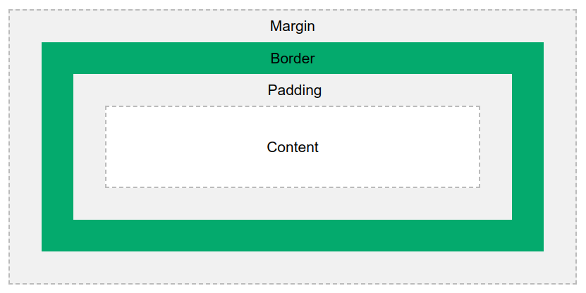

CSS Box Model
Властивості height та width встановлюють висоту/ширину області всередині відступу(padding), межі(border) та поля(margin) елемента.
|  |
|
- Content – вміст поля, де з’являються текст і зображення
- Padding – очищає область навколо вмісту. Відступ прозорий
- Border – рамка, що охоплює відступи та вміст
- Margin – очищає область за межами. Поле прозоре
Важливо: коли ви встановлюєте властивості ширини та висоти елемента за допомогою CSS, ви просто встановлюєте ширину та висоту області вмісту. Щоб обчислити повний розмір елемента, ви також повинні додати відступи, рамки та поля.